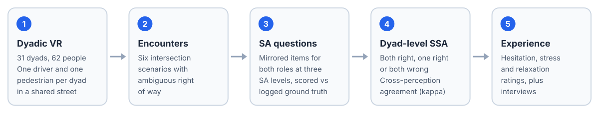

Social Situation Awareness in Driver-Pedestrian Interactions
The paper will be linked here after review.

Summary
Encounters between drivers and pedestrians are negotiated by two people at once, yet situation awareness (SA) is usually measured one person at a time. We study social situation awareness (SSA) in a dyadic virtual reality study: 31 driver-pedestrian dyads (62 participants) shared one virtual street and met in six intersection scenarios with ambiguous right of way.
After each encounter, both road users answered mirrored in-VR questions about their own and their partner's perception, comprehension and projection. We score SSA at the level of the dyad (both correct, one correct, both wrong), compare what each partner reported about the other through cross-perception agreement, and relate both to individual SA accuracy, self-reported hesitation, stress and relaxation, and post-study interviews.
Comprehension was the weakest level of shared understanding: the estimated probability that both partners were correct was 42.4% for comprehension items, against 67.6% for perception and 71.2% for projection. In 21.8% of encounters, driver and pedestrian were both wrong about who had the right of way, a failure that individual SA measures cannot show. Drivers were more accurate than pedestrians.
Method

Study design. Each dyad completed six encounters; both partners answered mirrored SA questions after each one.
Each dyad consisted of one driver and one pedestrian who met in the same virtual intersection. The six scenarios were designed so that neither road user had an unambiguous right of way.
Measuring SA for both sides of the same encounter
After every encounter, both participants answered mirrored in-VR questions at three SA levels: perception, comprehension and projection, covering their own behavior, their partner's behavior and the right of way. Answers were scored against a ground truth coded from the recorded vehicle and pedestrian behavior. The projection items were answered after the encounter, so we treat them as an imperfect measure of anticipation.
From individual SA to social SA
- Dyad-level SSA: for each item, whether both partners, one partner or neither was correct.
- Individual SA accuracy: per role and SA level, analyzed with linear mixed models.
- Cross-perception agreement: how well each partner's report matched the other's self-report (Cohen's kappa and Stuart-Maxwell tests), a mismatch that ground truth alone cannot reveal.
- Experience and reasoning: self-reported hesitation, stress and relaxation, decision factors and post-study interviews.
Results
Shared understanding breaks down at comprehension. A binomial mixed model of dyad-level SSA showed a clear effect of SA level (χ²(2) = 22.14, p < .001). Both partners were much less likely to be jointly correct about what the situation meant than about what happened or what would happen next (perception vs comprehension OR = 2.84; projection vs comprehension OR = 3.36).
Drivers were more accurate than pedestrians. In a linear mixed model of individual SA accuracy, role had a significant effect (F(1, 672.88) = 13.48).
Cross-perception agreement captures mismatches between what each road user reported about the other, a failure that scoring each person against ground truth does not show.